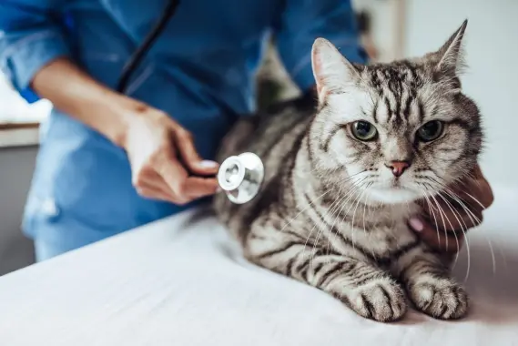

Más de una década entregando cuidado y bienestar.
Fundada en 2009, la Veterinaria San Marcos nació con la misión de transformar la atención médica animal. Nos hemos consolidado como un centro clínico de confianza, integrando tecnología de vanguardia, un equipo humano apasionado y un fuerte compromiso con las familias y sus mascotas.
Creemos firmemente que cada mascota merece una atención digna, empática y de alta calidad técnica, desde sus primeros meses de vida hasta su etapa dorada.
Lo que nos define
Pilares fundamentales en cada consulta y tratamiento
Profesionalismo
Capacitación constante y protocolos médicos actualizados para garantizar diagnósticos certeros.
Empatía Animal
Tratamos a cada paciente con el respeto, amor y delicadeza que le darías en tu propio hogar.
Innovación
Modernizando los procesos mediante agendas digitales y expedientes clínicos accesibles.
Nuestro Equipo Médico
Especialistas dedicados al cuidado de tus compañeros
Dra. Valentina San Martín
Directora Médica & Cirujana
Especialista en medicina de animales pequeños y cirugía general con 12 años de trayectoria.
Dr. Carlos Mendoza
Médico Veterinario de Urgencias
Apasionado por la atención crítica, medicina interna y el bienestar felino.
Camila Riquelme
Asistente y Recepción
Encargada de la atención al cliente, coordinación de agendas y bienestar en sala de espera.